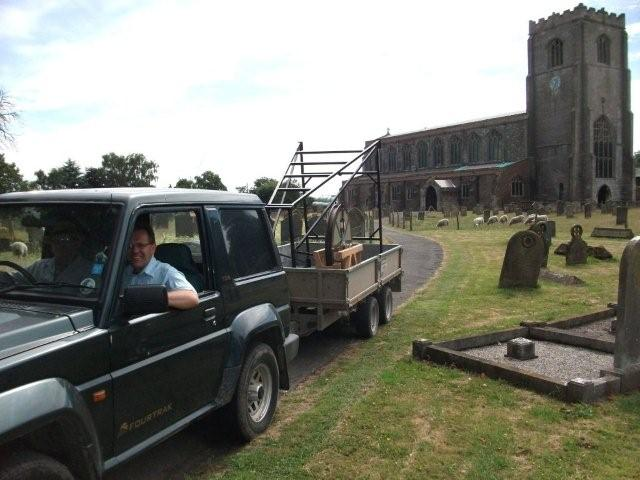

2010 News

Kirton in Holland Christmas Tree Festival - 4th to 11th December 2010
 Bellringers gathered at 7pm on Thursday, 2nd December, to setup and decorate the tree with bells and music notes, despite the monthly Kirton bellringing practise being cancelled. Most of the organisations in Kirton seemed to be represented i.e. decorating a tree with their own theme e.g. the Church Choir have a tree with interesting pieces of music as decorations and ‘Carol sheets’ amongst the windowsill display, then huge music notes and brass instrument decorations adorn a tree by The Kirton Youth Brass Band, a small tree with wood ornaments and super wood-turner display by Kirton’s Alan Johnson, a lovely tree decorated with craft cards by Paula Morgan, the Mothers Union have decorated their tree with a Caring For Families theme, The Royal British Legion incorporated poppies into their tree decorations, a theatrical theme for the KADYT tree, a green theme for the Concreation Garden Centre, an interesting hair display by a pillar by Tintease, and a huge very busy tree with many decorations made by The Scouts
Bellringers gathered at 7pm on Thursday, 2nd December, to setup and decorate the tree with bells and music notes, despite the monthly Kirton bellringing practise being cancelled. Most of the organisations in Kirton seemed to be represented i.e. decorating a tree with their own theme e.g. the Church Choir have a tree with interesting pieces of music as decorations and ‘Carol sheets’ amongst the windowsill display, then huge music notes and brass instrument decorations adorn a tree by The Kirton Youth Brass Band, a small tree with wood ornaments and super wood-turner display by Kirton’s Alan Johnson, a lovely tree decorated with craft cards by Paula Morgan, the Mothers Union have decorated their tree with a Caring For Families theme, The Royal British Legion incorporated poppies into their tree decorations, a theatrical theme for the KADYT tree, a green theme for the Concreation Garden Centre, an interesting hair display by a pillar by Tintease, and a huge very busy tree with many decorations made by The Scouts
On Saturday 4th December the festival was opened at 10am, by the vicar, Fr. Gary Morgan, dressed as a Victorian Gentleman. Inside entertainment was provided by the Kirton Youth Brass Band playing seasonal music - it was so good we wished it had lasted longer, but some of the players were very young! This was followed by KADT members playing a clarinet and drums and singing Christmas carols. This made for a super ‘concert’ while everyone wandered round looking at all the beautifully decorated Christmas trees.
There are stalls selling lovely home-made cakes, jams and chutneys etc. (on Saturdays at least) and the ladies are serving tea and coffee (to keep the cold at bay) with huge slices of cake! There is a raffle with many super prizes which is being drawn at 2pm on Saturday 11th December.
The festival is open daily 10am to 4pm from 4th to 12th December (except Sunday Services 10.30am-noon on 5th and 12th) and runs until the Carol Service on Sunday 12th December at 3pm.
Report and Photo: Diana Street
New Deanery of Holland
The ten bells of St Botolph, Boston rang out on Thursday evening of 4th November 2010, prior to the service to inaugurate the new Deanery of Holland. The commissioning of Canon Robin Whitehead as Rural Dean was carried out by the Bishop of Lincoln, the Right Reverend Dr. John Saxbee, on his last visit to the Stump before his retirement in the New Year.
Tom Freeston
November Ringing at Freiston
On Saturday 6th November 2010 the Eastern Branch met in the afternoon to ring on the six bells at St James, Freiston. The practice was well supported with over twenty ringers present. Peter Udy ran the ringing, and Ben Meyer (assistant ringing master) gave him a hand!
Tom Freeston welcomed everyone and reminded them of the next Eastern Branch meeting on the 4th of December at West Keal and Old Bolingbroke. He especially welcomed Guild Master Alan Payne and his wife Joan. Two new members were elected: Judith Quincey and Rebecca Carr. A collection for the bell repair fund raised £20 and Tom Palmer was thanked for making us welcome at Freiston and doing the cleaning before the ringing commenced.
Val Wild
Eastern Branch Quarter Peal Week Report
My original idea was to ring all eight bell towers in the Branch and supplement with six bell towers to achieve sixteen quarter peal attempts over the eight days. This was achieved. Of the sixteen attempts, twelve were successful, which is a credit to the Branch especially as only four ringers were not Branch members. They do however have strong links to the Branch.
Thomas Hebdige, Simon Pearson, Ivan Podbury, and Joy Scott all rang their first quarter peal on treble or covering bell. John Collett conducted Oxford Bob Triples for the first time. Penny Fountain (1), Michael Reynolds (2), Annette Rhodes (1), Diana Street (1) and Peter Udy (1) all rang quarters solely of new methods or mixes that included a new method.
Audrey Harrison and her daughter Rebecca Carr rang their first quarter of major for 24 years and Sue Buck rang her first quarter of major in the county.
Robert Ingamells showed great stamina by attempting a quarter on each day and rang seven out of eight, a marvelous achievement. He was, however, eclipsed by Ian Ansell who attempted nine and achieved seven.
I thank all the conductors, as without them the quarters would not have been rung. I especially congratulate the two young ringers who have conducted this year. Daniel Meyer conducted two and Gemma Evans conducted one with her father and brother in the team. It was dedicated to Matthew, the new arrival in the Evans family. I hope Gemma enjoyed telling her father what to do without fear of reprimand!
Rhoda, David and Michael Reynolds also rang a quarter together at their home tower, Swineshead, supported by a team of mostly Swineshead residents. They were augmented by Viv Simpson, Brian Bunting and Peter Limage, who became honorary Swinesheadians for fifty minutes. I thank Peter for helping me complete the team, as for a while it did not look possible.
I hope you all enjoyed taking part and will do so again next year. I think we should try to use some of the towers we did not get to this year. I know one tower would like us to ring there again next year and possibly there are others. Also I know some of you wanted some surprise methods. How about Lincolnshire Surprise Royal at the Stump?!
Peter Udy
Guild 8-Bell Striking Competition at Ingoldmells 2nd Oct 2010
Eastern Branch Coach Outing to Taylor's Bellfoundry, Loughborough
The annual outing for the Eastern Branch ringers was arranged for Saturday 25th September 2010. It also heralded the beginning of autumn or so it seemed from the temperature at 7.30 am, (6.30 am for the hardy souls from the north of the branch!) Fortunately, the sun emerged and we had a lovely bright day.
 We arrived well on time at our first stop, the John Taylor Bellfoundry and Museum. After a look around the museum and shop, most people joined in the tour of the foundry. We were divided into two groups and spent an interesting time with the three tour guides. We started with the history of the Taylor family, then onto the more technical side of casting and tuning the bells. It was all told clearly and simply and those who wanted, could ask questions and were able to delve deeper into the processes. We had to be careful in our group, not to leave Edward behind in the oven where he stood for some time, “to get warmed up”! Although it was all very quiet when we were there and nothing was working, I should think after a day’s work you would need a good long shower and several pints to get rid of the dust etc!
We arrived well on time at our first stop, the John Taylor Bellfoundry and Museum. After a look around the museum and shop, most people joined in the tour of the foundry. We were divided into two groups and spent an interesting time with the three tour guides. We started with the history of the Taylor family, then onto the more technical side of casting and tuning the bells. It was all told clearly and simply and those who wanted, could ask questions and were able to delve deeper into the processes. We had to be careful in our group, not to leave Edward behind in the oven where he stood for some time, “to get warmed up”! Although it was all very quiet when we were there and nothing was working, I should think after a day’s work you would need a good long shower and several pints to get rid of the dust etc!
The foundry bells were unringable, but we were able to ring on the Dawson mini ring, quite a challenge for most of us until you got used to them – if you did! Whilst the last of us had a ring here the others had gone off to The Three Nuns for lunch. The food was good, but the delivery time left a lot to be desired, even though we had staggered our arrival as requested. We thought about borrowing one of John Collett’s doggy bags for the last mixed grill to be delivered, so that it could be eaten on the coach. However, we decided against it as Mick would probably have “blown a gasket” if peas had escaped onto the coach floor!
As a result of the delay it was decided to miss out on the ringing at Shepshed (8) and go on to Quorn. These were a lovely 8 and the captain was perfectly happy to allow us to begin ringing earlier than our stated time. Everyone, who wanted to, had a good ring here.
We went on to Melton Mowbray, quite a heavy 10 here. We had a wide range of talent in our group, for some it was the first time on 10 bells and at first they were a bit unsure, but soon settled down, others were more confident and rang as though they were there every week. I think everyone enjoyed the ringing, rang to the best of their ability and gained more confidence from the experience.
Some people ate tea before this last ring and some after, others, mentioning no names, ate before and after!
We were then homeward bound. Out thanks go to Mick, the driver, for driving us safely to our destinations – though, this year we did miss the long mystery tour he usually incorporates on the outings! Last, but by no means least, many, many thanks to the organizers, to Janice and Co, we are very grateful for all your hard work.
Viv Simpson
Lincolnshire Day, 1st October 2010, Marked with a Quarter Peal

L to R: David Bennett, William Daubney, Aubrey Pepper, Audrey Harrison, Tom Freeston, David Collin
The team shown above rang a quarter peal of Plain Bob Doubles at St Andrews, Butterwick to commemorate Lincolnshire day. When the photographer from the local paper turned up and asked if the band could stop for a few minutes, tower captain Tom Palmer explained that unfortunately that was not possible, so the reporter took some photos of the ringers in action, instead. The band kept ringing and scored a good quarter peal.
Photo by Tom Palmer
Bicker Steam Threshing 12th September 2010
 Eleven ringers,
foregoing Sunday lunch, climbed the narrow staircase of Bicker church tower at 1pm on Sunday 12th September, to add joyous bell sounds to the excitement and activity of the Bicker Steam Threshing weekend. Ringers from Surfleet, Benington, Kirton and Deeping St Nicholas joined those from Bicker to ring methods ranging from rounds and call changes to plain bob major.
Some of us, hitching a lift to the main show ground, on the trailer pulled by a steam roller, then joined in the open air service, conducted by Rev David de Verney and the archdeacon Rev Tim Barker. The hymn singing was accompanied by Chris Dobb's 89 key Gaviolli organ (powered by traction engine).
Eleven ringers,
foregoing Sunday lunch, climbed the narrow staircase of Bicker church tower at 1pm on Sunday 12th September, to add joyous bell sounds to the excitement and activity of the Bicker Steam Threshing weekend. Ringers from Surfleet, Benington, Kirton and Deeping St Nicholas joined those from Bicker to ring methods ranging from rounds and call changes to plain bob major.
Some of us, hitching a lift to the main show ground, on the trailer pulled by a steam roller, then joined in the open air service, conducted by Rev David de Verney and the archdeacon Rev Tim Barker. The hymn singing was accompanied by Chris Dobb's 89 key Gaviolli organ (powered by traction engine).
 There were displays of threshing, log sawing
and flour grinding, all driven by traction engines, of course. There were many interesting classic cars from Albert's super silver soft-top Rolls Royce, whose engine gleamed as if it had not been used despite it arriving (and leaving) under it's own power, to a 'nearly finished' Leyland, with various good condition Wolseys, Rileys, Morris Minors, a Vauxhall Victor, Rovers, E-type and XJS Jaguars. There was a post Office Telephone van from Lincoln, lorries (cabs), army jeeps, vans and motorcycles.
There were displays of threshing, log sawing
and flour grinding, all driven by traction engines, of course. There were many interesting classic cars from Albert's super silver soft-top Rolls Royce, whose engine gleamed as if it had not been used despite it arriving (and leaving) under it's own power, to a 'nearly finished' Leyland, with various good condition Wolseys, Rileys, Morris Minors, a Vauxhall Victor, Rovers, E-type and XJS Jaguars. There was a post Office Telephone van from Lincoln, lorries (cabs), army jeeps, vans and motorcycles.
 The stalls included
'Rusty Wrench' with all sorts of tools, the RSPB, and garden plants. A short shower meant that people headed for the marquee to look at the smaller stalls or to enjoy tea and home-made cakes, until the sun came out again. Finally
the RAF Coningsby Battle of Britain Flight Spitfire flew over the field very low, several times, a spectacular highlight of the day.
The stalls included
'Rusty Wrench' with all sorts of tools, the RSPB, and garden plants. A short shower meant that people headed for the marquee to look at the smaller stalls or to enjoy tea and home-made cakes, until the sun came out again. Finally
the RAF Coningsby Battle of Britain Flight Spitfire flew over the field very low, several times, a spectacular highlight of the day.
Report: Diana Street
Photos: Annette Rhodes
Guild 6-Bell Striking Competition, Elloe Deaneries Branch, 11th September 2010

Peter Udy receives the second prize in the cup competition from judge Sue Jones, on behalf of Kirton.
Photo: Philip Green
Coningsby Host September Ringing
The practice meeting at Coningsby was very well supported, with over 25 ringers turning up to ring a variety of methods as well as rounds and call changes. Peter Udy, our ringing master, had things moving along nicely and made sure that everyone kept working! Methods rung included: Plain Bob, Grandsire, and Stedman Doubles, Little Bob Minor, Cambridge and Beverley Surprise Minor. Down in the nave, Joan Simpson and her helper kept a good supply of tea and biscuits available - thank you Joan, and thanks to all helped in any way at Coningsby.
Julia Limage
Eastern Branch go to Lincoln
The Eastern Branch rang for evensong at the Cathedral on Sunday 29th August. There was an excellent turnout of ringers given that it was the bank holiday weekend. A number of them were ringing at the Cathedral for the first time and so I hope it provides you with the necessary encouragement to continue the art of bell ringing. Rounds and call changes were mostly rung, but there was also a course of Plain Bob Royal. Thank you to all of you who attended and I hope you will come again next year.
Peter Udy
Wombel Visits the Eastern Branch
Arrangements were made for the 'Wombel' (one bell) Saxilby Ringing Simulator to be in the Freiston/Butterwick area during June and July.
Simon Pearson provided transport and collected the Wombel from it's home at Willingham by Stow. Local Branch members David Collin, Audrey Harrison, David Bennett and John Collett spent two hours assembling the Wombel in Frieston church on Wednesday morning, 23rd June.

The same team met again in the evening when twenty five Brownies enjoyed a tour of the church. This included the belfry, ringing room and views from the top of the tower. They all tried their skills on the Wombel.The Scouts were the next group to visit Frieston church, on Monday evening, 28th June, they all enjoyed the same tour and ringing on the Wombel.
Butterwick Primary School was the next venue for the Wombel, at the annual school fete, on Friday 9th July from 3 to 5 pm. This event was very well attended, many children and adults spent time on the Wombel with tuition from our Branch members.
It was then time to dismantle the whole Wombel and Simon provided the transport for it's return home.
Very many thanks go to the dedicated team of helpers who gave up their time for these events.
Tom Freeston
Pre-BBQ Ringing at St Luke's, Stickney on Saturday July 3rd 2010
This ringing meeting was very well supported by approximately twenty five ringers and we were pleased that friends from the other Branches of the Lincoln Diocesan Guild came to join us. We had a very warm welcome at St Luke's and were provided with a good supply of tea, coffee and biscuits.
Peter Udy, our Branch Ringing Master, kept the ringing moving along nicely and (despite some problems keeping naughty number four bell in order) we managed a variety of methods.
The 'locals' told me that they were really pleased to have the bells rung as it was a rare occurrence these days, and they hoped we would visit again soon.
Julia Limage
Eastern Branch BBQ at Sibsey Trader Mill on Saturday July 3rd 2010
 Once again, the Eastern Branch BBQ was a cracking success and many thanks are due to Ian Ansell for being our host for the eighth year in succession.
Once again, the Eastern Branch BBQ was a cracking success and many thanks are due to Ian Ansell for being our host for the eighth year in succession.
Over eighty ringers and friends turned up, and all six Branches were represented, especially welcome was the new Guild Master, Alan Payne and his wife Joan. The age of the attendees ranged from baby Matthew George Evans at just five weeks, to some ringers eighty plus years young.
 We were blessed with superb warm weather and just enough wind to keep the windmill working.
We were blessed with superb warm weather and just enough wind to keep the windmill working.
The evening raised £568.15 for the Eastern Branch bell repair fund, and included £52 from the Evans' quiz which had a junior winner, Andrew Evans and senior winners, the Horncastle team, well done. This year the quiz had geography and world cup themes, which was a bit lost on those of us who are not soccerphiles. But it was fun anyway. Also included in the total was £94 from the raffle, which Tom Freeston organised.
The Willoughby family were once again responsible for cooking the tasty burgers and sausages, supervised by Jet, the black labrador.
Thanks to all who contributed time, food, catering and tent-erecting skills to this event.
Report: Julia Limage
Photos: Tom Freeston (top) and Val Wild (bottom)